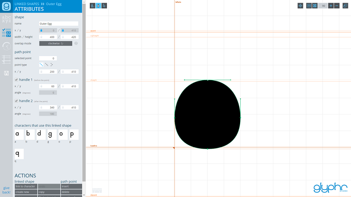

|
Help & Documentation |
Overviewwelcome starting a new project navigation and layout file formats unicodeEditingshape editing canvas tools keyboard shortcutsPanelscharacter chooser layer attributes character shape path point linked shape instance edit history guidesPagescharacter edit linked shapes ligatures kerning test drive font settings project settings import svg export font about |
Linked Shapes PageLinked Shapes are shapes that you define once, and can be added to many characters. If you edit the original Linked Shape, it also updates in all the characters where it was inserted. For example, you could define an 'o' shape, and insert a Linked Shape Instance to the characters 'abdgopq'. This can help in the beginning phases of font design to rough out common shapes across an entire set of characters. Editing a Linked Shape uses all the same shape editing concepts that characters do, except there is only one shape allowed per Linked Shape. Linking and Un-linkingLinked Shapes can be added to a character either from the Linked Shapes page, or from the Character Edit page. Once you have a Linked Shape Instance in a character, it can be un-linked. This essentially makes a copy of the original Linked Shape and places it in the character as a regular shape. In the later phases of font design, this can be useful for final tweaks. Many shapes between characters feel similar, but are slightly different. Alternatively, if you are creating a shape in a character and decide you would like to use it in other characters as a Linked Shape, you can do so by selecting the shape and selecting the 'turn into a linked shape' action. This will add a new entry to the Linked Shapes page, and turn the currently selected shape into a Linked Shape Instance. |